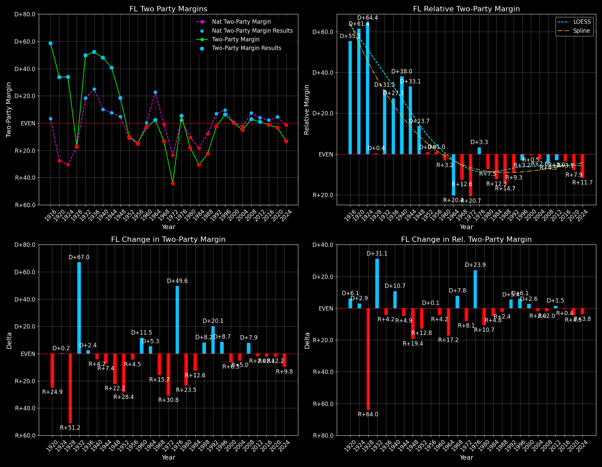

Florida (FL) — Statewide

Margins · 3rd-Party share · Pres. deltas

Relative margins · Relative 3rd-Party · Rel. deltas
Florida (FL) — Total Data
| Year | D | R | State Margin | Nat. Margin | Rel. Margin | Total votes | EVs |
|---|---|---|---|---|---|---|---|
| 1948 | 281,988(48.8%) | 194,280(33.6%) | D+15.2 | D+4.5 | D+10.7 | 577,643 | 8 |
| 1952 | 444,950(45.0%)(Δ 162,962) | 544,036(55.0%)(Δ 349,756) | R+10.0(Δ R+25.2) | R+10.9(Δ R+15.3) | D+0.8(Δ R+9.9) | 989,337(Δ 411,694) | 10 |
| 1956 | 480,371(42.7%)(Δ 35,421) | 643,849(57.3%)(Δ 99,813) | R+14.5(Δ R+4.5) | R+15.4(Δ R+4.5) | D+0.9(Δ D+0.0) | 1,124,220(Δ 134,883) | 10 |
| 1960 | 748,700(48.5%)(Δ 268,329) | 795,476(51.5%)(Δ 151,627) | R+3.0(Δ D+11.5) | D+0.2(Δ D+15.6) | R+3.2(Δ R+4.1) | 1,544,176(Δ 419,956) | 10 |
| 1964 | 948,540(51.1%)(Δ 199,840) | 905,941(48.9%)(Δ 110,465) | D+2.3(Δ D+5.3) | D+22.6(Δ D+22.4) | R+20.3(Δ R+17.1) | 1,854,481(Δ 310,305) | 14 |
| 1968 | 676,794(30.9%)(Δ -271,746) | 886,804(40.5%)(Δ -19,137) | R+9.6(Δ R+11.9) | R+0.7(Δ R+23.3) | R+8.9(Δ D+11.4) | 2,187,805(Δ 333,324) | 14 |
| 1972 | 718,117(27.8%)(Δ 41,323) | 1,857,759(71.9%)(Δ 970,955) | R+44.1(Δ R+34.5) | R+23.1(Δ R+22.4) | R+21.0(Δ R+12.1) | 2,583,283(Δ 395,478) | 17 |
| 1976 | 1,636,000(51.9%)(Δ 917,883) | 1,469,531(46.6%)(Δ -388,228) | D+5.3(Δ D+49.4) | D+2.1(Δ D+25.2) | D+3.2(Δ D+24.2) | 3,150,631(Δ 567,348) | 17 |
| 1980 | 1,419,475(38.5%)(Δ -216,525) | 2,046,951(55.5%)(Δ 577,420) | R+17.0(Δ R+22.3) | R+9.7(Δ R+11.8) | R+7.3(Δ R+10.5) | 3,687,026(Δ 536,395) | 17 |
| 1984 | 1,448,816(34.7%)(Δ 29,341) | 2,730,350(65.3%)(Δ 683,399) | R+30.7(Δ R+13.6) | R+18.2(Δ R+8.5) | R+12.4(Δ R+5.2) | 4,180,051(Δ 493,025) | 21 |
| 1988 | 1,656,701(38.5%)(Δ 207,885) | 2,618,885(60.9%)(Δ -111,465) | R+22.4(Δ D+8.3) | R+7.7(Δ D+10.5) | R+14.6(Δ R+2.2) | 4,302,313(Δ 122,262) | 21 |
| 1992 | 2,072,798(39.0%)(Δ 416,097) | 2,173,310(40.9%)(Δ -445,575) | R+1.9(Δ D+20.5) | D+5.6(Δ D+13.3) | R+7.5(Δ D+7.2) | 5,314,392(Δ 1,012,079) | 25 |
| 1996 | 2,546,870(48.0%)(Δ 474,072) | 2,244,536(42.3%)(Δ 71,226) | D+5.7(Δ D+7.6) | D+8.5(Δ D+3.0) | R+2.8(Δ D+4.6) | 5,303,794(Δ -10,598) | 25 |
| 2000 | 2,912,253(48.8%)(Δ 365,383) | 2,912,790(48.8%)(Δ 668,254) | R+0.0(Δ R+5.7) | D+0.5(Δ R+8.0) | R+0.5(Δ D+2.3) | 5,963,110(Δ 659,316) | 25 |
| 2004 | 3,583,544(47.1%)(Δ 671,291) | 3,964,522(52.1%)(Δ 1,051,732) | R+5.0(Δ R+5.0) | R+2.5(Δ R+3.0) | R+2.5(Δ R+2.0) | 7,609,810(Δ 1,646,700) | 27 |
| 2008 | 4,282,074(51.0%)(Δ 698,530) | 4,045,624(48.2%)(Δ 81,102) | D+2.8(Δ D+7.8) | D+7.3(Δ D+9.7) | R+4.5(Δ R+1.9) | 8,390,744(Δ 780,934) | 27 |
| 2012 | 4,237,756(50.0%)(Δ -44,318) | 4,163,447(49.1%)(Δ 117,823) | D+0.9(Δ R+1.9) | D+3.9(Δ R+3.4) | R+3.0(Δ D+1.5) | 8,474,179(Δ 83,435) | 29 |
| 2016 | 4,504,975(47.8%)(Δ 267,219) | 4,617,886(49.0%)(Δ 454,439) | R+1.2(Δ R+2.1) | D+2.1(Δ R+1.8) | R+3.3(Δ R+0.3) | 9,420,039(Δ 945,860) | 29 |
| 2020 | 5,297,045(47.9%)(Δ 792,070) | 5,668,731(51.2%)(Δ 1,050,845) | R+3.4(Δ R+2.2) | D+4.5(Δ D+2.4) | R+7.8(Δ R+4.5) | 11,067,456(Δ 1,647,417) | 29 |
| 2024 | 4,683,038(43.0%)(Δ -614,007) | 6,110,125(56.1%)(Δ 441,394) | R+13.1(Δ R+9.7) | R+1.5(Δ R+5.9) | R+11.6(Δ R+3.8) | 10,893,752(Δ -173,704) | 30 |
Column explanations
- Δ
- Change (delta) in the value from the previous election year.
- Year
- Election year.
- D
- Number of votes for the Democratic candidate (raw count(pct%)).
- R
- Number of votes for the Republican candidate (raw count(pct%)).
- State Margin
- Margin between the two major-party candidates, including third-party votes ((D - R)/total).
- Nat. Margin
- The national presidential margin for that year, including third-party votes ((D_total - R_total)/total_votes).
- Rel. Margin
- The presidential margin relative to the national presidential margin (Margin - Nat. Margin).
- Total votes
- Total voter turnout or ballots cast (when provided).
- EVs
- Number of electoral votes allocated to this state or unit.
Florida (FL) — Third-Party Data
| Year | D | R | Other votes | State 3rd-Party Share | 3rd-Party Nat. Share | 3rd-Party Rel. Share |
|---|---|---|---|---|---|---|
| 1948 | 281,988(48.8%) | 194,280(33.6%) | 101,375(17.5%) | 17.55% | 5.38% | 12.17% |
| 1952 | 444,950(45.0%)(Δ 162,962) | 544,036(55.0%)(Δ 349,756) | 351(0.0%) | 0.04% | 0.49% | -0.45% |
| 1956 | 480,371(42.7%)(Δ 35,421) | 643,849(57.3%)(Δ 99,813) | 0(0.0%) | 0.00% | 0.67% | -0.67% |
| 1960 | 748,700(48.5%)(Δ 268,329) | 795,476(51.5%)(Δ 151,627) | 0(0.0%) | 0.00% | 0.73% | -0.73% |
| 1964 | 948,540(51.1%)(Δ 199,840) | 905,941(48.9%)(Δ 110,465) | 0(0.0%) | 0.00% | 0.48% | -0.48% |
| 1968 | 676,794(30.9%)(Δ -271,746) | 886,804(40.5%)(Δ -19,137) | 624,207(28.5%) | 28.53% | 13.86% | 14.67% |
| 1972 | 718,117(27.8%)(Δ 41,323) | 1,857,759(71.9%)(Δ 970,955) | 7,407(0.3%) | 0.29% | 1.80% | -1.52% |
| 1976 | 1,636,000(51.9%)(Δ 917,883) | 1,469,531(46.6%)(Δ -388,228) | 45,100(1.4%) | 1.43% | 1.90% | -0.47% |
| 1980 | 1,419,475(38.5%)(Δ -216,525) | 2,046,951(55.5%)(Δ 577,420) | 220,600(6.0%) | 5.98% | 8.24% | -2.25% |
| 1984 | 1,448,816(34.7%)(Δ 29,341) | 2,730,350(65.3%)(Δ 683,399) | 885(0.0%) | 0.02% | 0.67% | -0.65% |
| 1988 | 1,656,701(38.5%)(Δ 207,885) | 2,618,885(60.9%)(Δ -111,465) | 26,727(0.6%) | 0.62% | 0.98% | -0.36% |
| 1992 | 2,072,798(39.0%)(Δ 416,097) | 2,173,310(40.9%)(Δ -445,575) | 1,068,284(20.1%) | 20.10% | 19.55% | 0.55% |
| 1996 | 2,546,870(48.0%)(Δ 474,072) | 2,244,536(42.3%)(Δ 71,226) | 512,388(9.7%) | 9.66% | 10.05% | -0.39% |
| 2000 | 2,912,253(48.8%)(Δ 365,383) | 2,912,790(48.8%)(Δ 668,254) | 138,067(2.3%) | 2.32% | 3.75% | -1.43% |
| 2004 | 3,583,544(47.1%)(Δ 671,291) | 3,964,522(52.1%)(Δ 1,051,732) | 61,744(0.8%) | 0.81% | 1.00% | -0.19% |
| 2008 | 4,282,074(51.0%)(Δ 698,530) | 4,045,624(48.2%)(Δ 81,102) | 63,046(0.8%) | 0.75% | 1.42% | -0.67% |
| 2012 | 4,237,756(50.0%)(Δ -44,318) | 4,163,447(49.1%)(Δ 117,823) | 72,976(0.9%) | 0.86% | 1.73% | -0.87% |
| 2016 | 4,504,975(47.8%)(Δ 267,219) | 4,617,886(49.0%)(Δ 454,439) | 297,178(3.2%) | 3.15% | 5.73% | -2.58% |
| 2020 | 5,297,045(47.9%)(Δ 792,070) | 5,668,731(51.2%)(Δ 1,050,845) | 101,680(0.9%) | 0.92% | 1.84% | -0.93% |
| 2024 | 4,683,038(43.0%)(Δ -614,007) | 6,110,125(56.1%)(Δ 441,394) | 100,589(0.9%) | 0.92% | 1.88% | -0.96% |
Column explanations
- Year
- Election year.
- D
- Number of votes for the Democratic candidate (raw count(pct%)).
- R
- Number of votes for the Republican candidate (raw count(pct%)).
- Other votes
- Number of votes for third-party (other) candidates (raw count(pct%)).
- State 3rd-Party Share
- Share of the vote received by third-party (other) candidates.
- 3rd-Party Nat. Share
- The national third-party share for that year (3rd-Party votes / total votes).
- 3rd-Party Rel. Share
- Third-party share relative to the national third-party share (3rd-Party share - Nat. 3rd-Party share).

Two-party margins · relative · deltas
Florida (FL) — Two-Party Data
| Year | D | R | 2-Party Margin | 2-Party Nat. Margin | 2-Party Rel. Margin | EVs |
|---|---|---|---|---|---|---|
| 1948 | 281,988(59.2%) | 194,280(40.8%) | D+18.4 | D+4.7 | D+13.7 | 8 |
| 1952 | 444,950(45.0%)(Δ 162,962) | 544,036(55.0%)(Δ 349,756) | R+10.0(Δ R+28.4) | R+10.9(Δ R+15.6) | D+0.9(Δ R+12.8) | 10 |
| 1956 | 480,371(42.7%)(Δ 35,421) | 643,849(57.3%)(Δ 99,813) | R+14.5(Δ R+4.5) | R+15.5(Δ R+4.6) | D+1.0(Δ D+0.1) | 10 |
| 1960 | 748,700(48.5%)(Δ 268,329) | 795,476(51.5%)(Δ 151,627) | R+3.0(Δ D+11.5) | D+0.2(Δ D+15.7) | R+3.2(Δ R+4.2) | 10 |
| 1964 | 948,540(51.1%)(Δ 199,840) | 905,941(48.9%)(Δ 110,465) | D+2.3(Δ D+5.3) | D+22.7(Δ D+22.5) | R+20.4(Δ R+17.2) | 14 |
| 1968 | 676,794(43.3%)(Δ -271,746) | 886,804(56.7%)(Δ -19,137) | R+13.4(Δ R+15.7) | R+0.8(Δ R+23.5) | R+12.6(Δ D+7.8) | 14 |
| 1972 | 718,117(27.9%)(Δ 41,323) | 1,857,759(72.1%)(Δ 970,955) | R+44.2(Δ R+30.8) | R+23.6(Δ R+22.8) | R+20.7(Δ R+8.1) | 17 |
| 1976 | 1,636,000(52.7%)(Δ 917,883) | 1,469,531(47.3%)(Δ -388,228) | D+5.4(Δ D+49.6) | D+2.1(Δ D+25.7) | D+3.3(Δ D+23.9) | 17 |
| 1980 | 1,419,475(40.9%)(Δ -216,525) | 2,046,951(59.1%)(Δ 577,420) | R+18.1(Δ R+23.5) | R+10.6(Δ R+12.7) | R+7.5(Δ R+10.7) | 17 |
| 1984 | 1,448,816(34.7%)(Δ 29,341) | 2,730,350(65.3%)(Δ 683,399) | R+30.7(Δ R+12.6) | R+18.3(Δ R+7.7) | R+12.3(Δ R+4.8) | 21 |
| 1988 | 1,656,701(38.7%)(Δ 207,885) | 2,618,885(61.3%)(Δ -111,465) | R+22.5(Δ D+8.2) | R+7.8(Δ D+10.5) | R+14.7(Δ R+2.4) | 21 |
| 1992 | 2,072,798(48.8%)(Δ 416,097) | 2,173,310(51.2%)(Δ -445,575) | R+2.4(Δ D+20.1) | D+6.9(Δ D+14.7) | R+9.3(Δ D+5.4) | 25 |
| 1996 | 2,546,870(53.2%)(Δ 474,072) | 2,244,536(46.8%)(Δ 71,226) | D+6.3(Δ D+8.7) | D+9.5(Δ D+2.6) | R+3.2(Δ D+6.1) | 25 |
| 2000 | 2,912,253(50.0%)(Δ 365,383) | 2,912,790(50.0%)(Δ 668,254) | R+0.0(Δ R+6.3) | D+0.5(Δ R+8.9) | R+0.5(Δ D+2.6) | 25 |
| 2004 | 3,583,544(47.5%)(Δ 671,291) | 3,964,522(52.5%)(Δ 1,051,732) | R+5.0(Δ R+5.0) | R+2.5(Δ R+3.0) | R+2.6(Δ R+2.0) | 27 |
| 2008 | 4,282,074(51.4%)(Δ 698,530) | 4,045,624(48.6%)(Δ 81,102) | D+2.8(Δ D+7.9) | D+7.4(Δ D+9.9) | R+4.5(Δ R+2.0) | 27 |
| 2012 | 4,237,756(50.4%)(Δ -44,318) | 4,163,447(49.6%)(Δ 117,823) | D+0.9(Δ R+2.0) | D+3.9(Δ R+3.4) | R+3.0(Δ D+1.5) | 29 |
| 2016 | 4,504,975(49.4%)(Δ 267,219) | 4,617,886(50.6%)(Δ 454,439) | R+1.2(Δ R+2.1) | D+2.2(Δ R+1.7) | R+3.5(Δ R+0.4) | 29 |
| 2020 | 5,297,045(48.3%)(Δ 792,070) | 5,668,731(51.7%)(Δ 1,050,845) | R+3.4(Δ R+2.2) | D+4.5(Δ D+2.3) | R+7.9(Δ R+4.5) | 29 |
| 2024 | 4,683,038(43.4%)(Δ -614,007) | 6,110,125(56.6%)(Δ 441,394) | R+13.2(Δ R+9.8) | R+1.5(Δ R+6.0) | R+11.7(Δ R+3.8) | 30 |
Column explanations
- Δ
- Change (delta) in the value from the previous election year.
- Year
- Election year.
- D
- Number of votes for the Democratic candidate (raw count(pct%)).
- R
- Number of votes for the Republican candidate (raw count(pct%)).
- 2-Party Margin
- Margin between the two major-party candidates, ignoring third-party votes ((D - R)/(D + R)).
- 2-Party Nat. Margin
- The national presidential margin for that year, including third-party votes ((D_total - R_total)/total_votes).
- 2-Party Rel. Margin
- The presidential margin relative to the national presidential margin (Margin - Nat. Margin).
- EVs
- Number of electoral votes allocated to this state or unit.